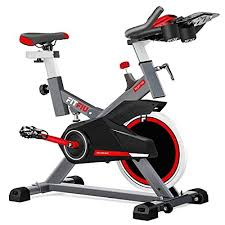

Glucosa mes de septiembre
Glucemia Diaria:
01/09/2023 /Antes De Desayunar / 143 mg/dl / 09:55 pm
01/09/2023 /Antes De Cenar / 138 mg/dl / 21:45 pm
02/09/2023 /Antes De Desayunar / 122 mg/dl / 09:42 pm
03/09/2023 /Antes De Desayunar / 108 mg/dl / 10:28 pm
04/09/2023 /Antes De Desayunar / 123 mg/dl / 08:48 pm
05/09/2023 /Antes De Desayunar / 128 mg/dl / 08:53 pm
05/09/2023 /Antes De Desayunar / 135 mg/dl / 21:47 pm
06/09/2023 /Antes De Desayunar / 114 mg/dl / 09:46 pm
06/09/2023 /Antes De Cenar / 141 mg/dl / 20:47 pm
07/09/2023 /Antes De Desayunar / 111 mg/dl / 10:00 pm
08/09/2023 /Antes De Desayunar / 118 mg/dl / 09:20 pm
09/09/2023 /Antes De Desayunar / 103 mg/dl / 10:16 pm
10/09/2023 /Antes De Desayunar / 145 mg/dl / 09:14 pm
11/09/2023 /Antes De Desayunar / 164 mg/dl / 08:17 pm
11/09/2023 /Antes De Cenar / 140 mg/dl / 20:27 pm
12/09/2023 /Antes De Desayunar / 121 mg/dl / 09:28 pm
13/09/2023 /Antes De Desayunar / 131 mg/dl / 09:19 pm
14/09/2023 /Antes De Desayunar / 123 mg/dl / 09:51 pm
16/09/2023 /Antes De Desayunar / 107 mg/dl / 09:24 pm
17/09/2023 /Antes De Desayunar / 129 mg/dl / 10:41 pm
18/09/2023 /Antes De Desayunar / 154 mg/dl / 09:30 pm
20/09/2023 /Antes De Desayunar / 125 mg/dl / 09:23 pm
21/09/2023 /Antes De Desayunar / 128 mg/dl / 09:10 pm
22/09/2023 /Antes De Desayunar / 156 mg/dl / 10:14 pm
23/09/2023 /Antes De Desayunar / 135 mg/dl / 09:31 pm
24/09/2023 /Antes De Desayunar / 147 mg/dl / 10:02 pm
25/09/2023 /Antes De Desayunar / 129 mg/dl / 10:02 pm
26/09/2023 /Antes De Desayunar / 132 mg/dl / 09:32 pm
27/09/2023 /Antes De Desayunar / 141 mg/dl / 09:30 pm
27/09/2023 /Antes De Comer / 216 mg/dl / 18:23 pm
27/09/2023 /Antes De Cenar / 151 mg/dl / 22:34 pm
28/09/2023 /Antes De Desayunar / 139 mg/dl / 09:00 pm
29/09/2023 /Antes De Desayunar / 135 mg/dl / 09:39 pm
30/09/2023 /Antes De Desayunar / 135 mg/dl / 09:25 pm
30/09/2023 /Antes De Cenar / 182 mg/dl / 20:27 pm
30/09/2023 /Despues De Cenar / 186 mg/dl / 23:29 pm
Deporte Diario:



01/09/2023 / Despues De Comer / 00:00 pm / 30min Cinta de Correr